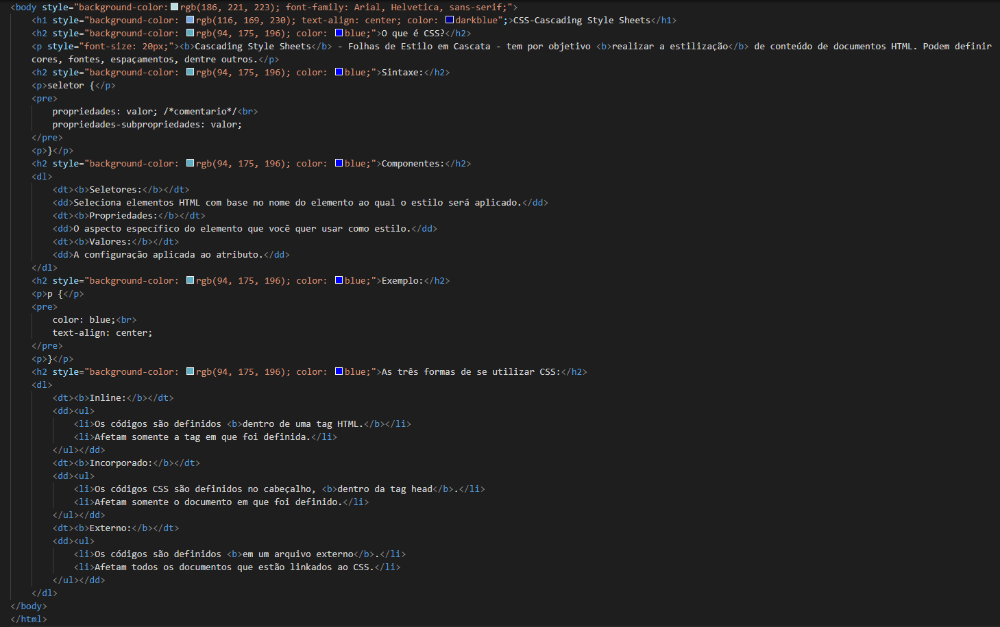
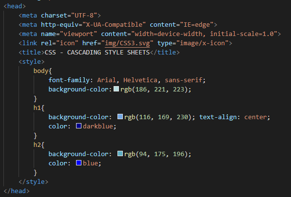
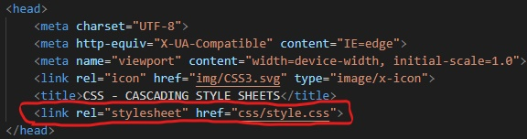
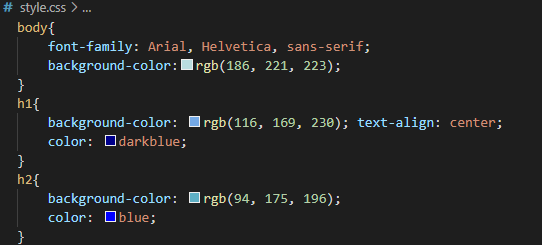

Cascading Style Sheets - Folhas de Estilo em Cascata - tem por objetivo realizar a estilização de conteúdo de documentos HTML. Podem definir cores, fontes, espaçamentos, dentre outros.
seletor {
propriedades: valor; /*comentario*/
propriedades-subpropriedades: valor;
}
p {
color: blue;
text-align: center;
}
Como explicado o CSS Inline é feito na própria tag HTML, segue o exemplo:
Perceba que dentro de cada Tag há "style" esse comando é o que mexe no estilo da Tag, como por exemplo, ali mudou a cor do fundo e a fonte das letras do "body", a cor do fundo de cada
e a própria cor dos "h2" e a cor do fundo, a cor e o posicionamento do "h1".
Segue como fica o site com esse tipo de CSS, clicando aqui
O Incorporado é no espaçamento do "head", segue o exemplo:
Segue esse mesmo modelo:
seletor {
propriedades: valor; /*comentario*/
propriedades-subpropriedades: valor;
}
Segue como fica o site com esse tipo de CSS, clicando aqui
Ja o CSS Externo é necessário criar um documento "style.css" em uma pasta nomeada "css", onde você ira linkar no seu arquivo HTML, segue o exemplo do linkamento:
O arquivo "css/style.css:"
Segue como fica o site com esse tipo de CSS, clicando aqui